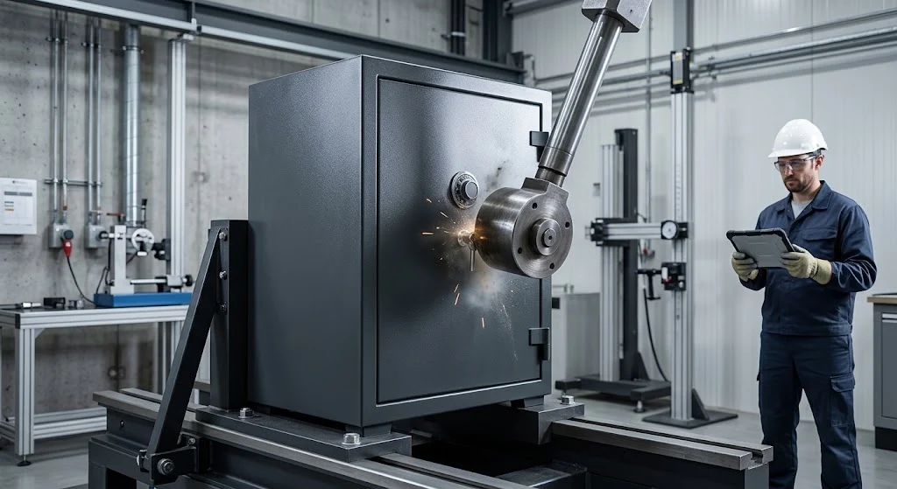

Apa Itu Brankas Besi dan Mengapa Dibutuhkan Instansi di Malang?
Brankas besi adalah lemari penyimpanan berbahan logam yang dirancang untuk melindungi dokumen, uang, atau barang berharga dari risiko pencurian maupun kerusakan. Instansi pemerintah, sekolah, dan perusahaan di Malang umumnya membutuhkan brankas besi untuk menyimpan dokumen penting seperti surat berharga, arsip keuangan, atau data kepegawaian.
Kebutuhan akan brankas besi Malang biasanya meningkat seiring bertambahnya volume dokumen yang harus diamankan, terutama pada instansi yang memiliki kewajiban administrasi dan audit rutin.
Bagaimana Uji Beban pada Brankas Besi Dilakukan?
Uji beban pada brankas besi umumnya dilakukan produsen untuk mengevaluasi kekuatan struktur, termasuk ketahanan pintu, engsel, dan sistem kunci terhadap tekanan atau benturan tertentu. Proses ini bertujuan memastikan brankas tetap berfungsi optimal dalam kondisi pemakaian normal maupun saat menghadapi upaya pembongkaran.
Metode dan standar pengujian dapat berbeda antar produsen, sehingga calon pembeli sebaiknya menanyakan langsung dokumen hasil uji atau sertifikasi yang dimiliki supplier sebelum memutuskan pembelian dalam jumlah besar.

Apa Saja Standar yang Perlu Diperhatikan untuk Penyimpanan Arsip?
Instansi yang menyimpan arsip bernilai guna tinggi umumnya perlu memperhatikan pedoman penyimpanan arsip yang berlaku di Indonesia, termasuk aspek ketahanan terhadap api dan kelembapan pada tempat penyimpanan. Beberapa lembaga kearsipan memberikan rekomendasi umum terkait spesifikasi lemari atau brankas yang layak digunakan untuk arsip vital.
Karena standar dan sertifikasi dapat bervariasi tergantung jenis dokumen yang disimpan, sebaiknya instansi berkonsultasi dengan supplier maupun pihak terkait untuk memastikan brankas yang dipilih sesuai dengan kebutuhan penyimpanan arsip mereka.
Faktor Penting Memilih Supplier Brankas Besi Malang
Memilih supplier yang tepat sama pentingnya dengan memilih spesifikasi brankas itu sendiri, terutama untuk memastikan produk yang diterima sesuai dengan kebutuhan dan memiliki dukungan layanan yang memadai.
Ketebalan Plat Baja
Ketebalan plat baja memengaruhi daya tahan brankas terhadap benturan maupun usaha pembongkaran. Setiap kelas produk umumnya memiliki spesifikasi ketebalan yang berbeda, sehingga penting menanyakan detail ini secara langsung kepada supplier.
Sistem Kunci dan Keamanan Tambahan
Selain kunci konvensional, sebagian brankas besi Malang juga dilengkapi sistem kunci kombinasi atau kunci elektronik sebagai lapisan keamanan tambahan. Pemilihan sistem kunci sebaiknya disesuaikan dengan tingkat kerahasiaan dokumen yang akan disimpan.
Layanan Pengiriman dan Purnajual di Wilayah Malang
Supplier lokal di Malang umumnya dapat menawarkan waktu pengiriman yang lebih cepat serta layanan purnajual seperti pemasangan dan perbaikan kunci jika diperlukan di kemudian hari.
Berapa Kisaran Harga Brankas Besi di Malang?
Harga brankas besi Malang dapat bervariasi tergantung ukuran, ketebalan plat, dan jenis sistem kunci yang digunakan. Semakin besar kapasitas dan semakin lengkap fitur keamanannya, harga brankas umumnya juga akan semakin tinggi.
Untuk mendapatkan gambaran harga yang sesuai kebutuhan, sebaiknya calon pembeli meminta penawaran langsung dari beberapa supplier dengan menyertakan spesifikasi kebutuhan secara rinci.
Kesimpulan
Pastikan brankas besi Malang yang dipilih memiliki dokumen uji beban dan spesifikasi ketebalan plat yang jelas. Perhatikan pedoman penyimpanan arsip yang berlaku jika brankas digunakan untuk dokumen bernilai guna tinggi, serta utamakan supplier lokal Malang yang menyediakan layanan pengiriman dan purnajual yang responsif.